Market Summary
Key highlights and overall ASX market sentiment
Key Highlights
- ASX closed higher led by bank bounce; NAB jumped 3.8%
- Australian mortgage burden exceeds 1989 levels despite lower rates
- AI datacentre demand in Australia could stoke inflation and crowd out housing land
- Rapid demand for AI datacentres in Australia could stoke inflation, experts warn – and crowd out land for housing
- Australia’s mortgage burden is now above 1989 levels – when interest rates were 17%
- Rapid demand for AI datacentres in Australia could stoke inflation, experts warn – and crowd out land for housing
- Australia’s mortgage burden is now above 1989 levels – when interest rates were 17%
ASX closes higher as banks bounce; NAB jumps 3.8%
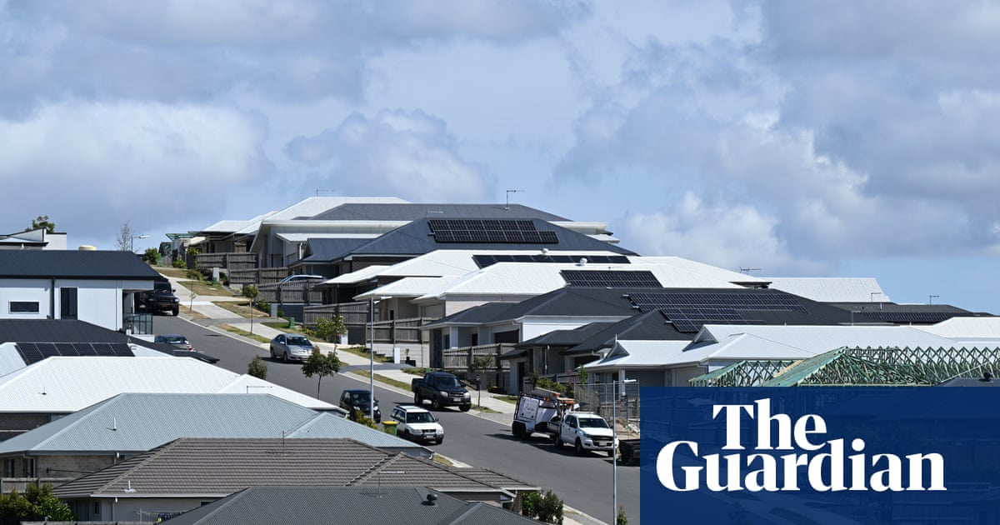
43Australia’s mortgage burden is now above 1989 levels – when interest rates were 17%
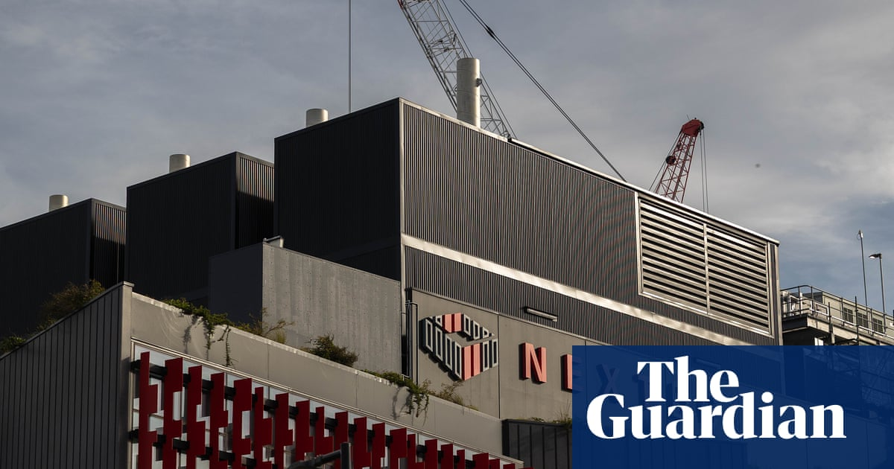
42Rapid demand for AI datacentres in Australia could stoke inflation, experts warn – and crowd out land for housing
Market Insights
Sector dynamics, market themes and structural opportunities
Key Themes
Sector Analysis
Financials
Strong rebound with NAB up 3.8% leading bank stocks higher; sector sentiment improved after recent weakness.
Investors may see value in major banks (CBA.AX, NAB.AX, ANZ.AX, WBC.AX) as rate expectations stabilise, but mortgage stress remains a headwind.
Materials / Mining
Mixed; rare earths and gold exploration active (Lindian, PLC Resources, King River, True North), but commodity price uncertainty persists.
Gold miners (NEM.AX, EVN.AX) may benefit from safe-haven demand; iron ore majors (BHP.AX, RIO.AX, FMG.AX) face China demand risks.
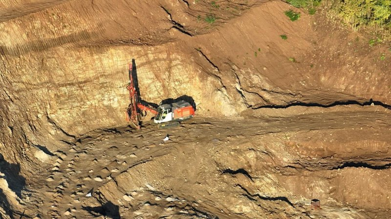
24Lindian fires first blast as Malawian rare earths mining kicks off
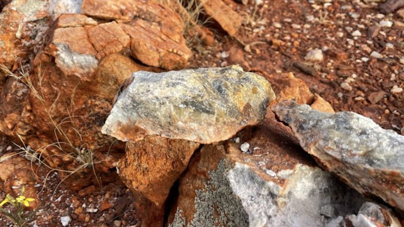
27PLC Resources lights up giant new WA gold hunting ground in Murchison
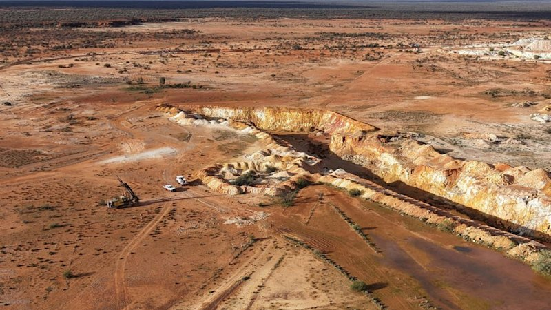
29King River fast-tracks hunt to unlock historic WA gold camp potential
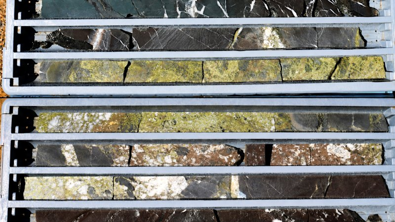
32True North drills into uber high-grade Qld copper-gold shoot
Energy
Gas and coal sectors under regulatory and geopolitical pressure; TMK Energy boosts Mongolian gas flows, but Hormuz disruption remains a risk.
LNG exporters (WPL.AX, STO.AX) may see volatility; coal stocks (WHC.AX, NHC.AX) face long-term demand uncertainty.
Consumer Staples
Mixed; major milk company fined for misleading claims, while Biscoff maker becomes $15.5bn giant. Consumer spending remains subdued.
Woolworths (WOW.AX) and Coles (COL.AX) face margin pressure from cost-conscious shoppers; branded food companies may benefit from global demand.
Technology
AI datacentre demand surges but raises inflation and land-use concerns; Microsoft announces layoffs. Meta's AI bubble worries persist.
ASX tech stocks (WTC.AX, XRO.AX, APX.AX) may benefit from AI infrastructure spending but face valuation risk if bubble bursts.
Real Estate / REITs
Housing affordability crisis deepens; mortgage burden at record levels. Property platform disputes highlight market transparency issues.
REITs (GMG.AX, SCG.AX, DXS.AX) face headwinds from high rates and weak housing sentiment; residential developers (STO.AX) under pressure.
Risk Assessment
Key risk factors, impact levels and mitigation strategies
AI datacentre inflation and land crowding
MediumMitigation: Monitor RBA commentary; consider infrastructure and tech stocks with strong fundamentals.
Australia’s mortgage burden is now above 1989 levels – when interest rates were 17%
Schizoid Australia freaks over tiny house prices falls
Rapid demand for AI datacentres in Australia could stoke inflation, experts warn – and crowd out land for housing
India’s Russian Oil Boom Outlives the Hormuz Shock
Why is China suddenly so angry?
It’s not over till its over, Hormuz flows remain weak
New KPMG chair under fire over ‘false’ whistleblower claims
Sydney firm raised $100k ‘for a bond that did not exist’, watchdog says
KPMG whistleblower scandal claims scalp of Westpac board member
Australians keep cutting back, inflation still won’t die
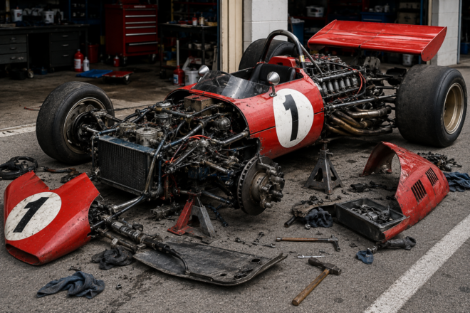
60Aussie PMI describes clapped out economic mess
Strategy
Actionable opportunities and defensive moves for ASX investors
Opportunities
Buy major banks on pullback
medium-termNAB's 3.8% bounce signals value; banks benefit from stable rates and high dividends despite mortgage stress.
Accumulate gold miners
medium-termGeopolitical risks and inflation support gold; exploration success (PLC Resources, King River) adds upside.
Defensive Moves
Reduce exposure to consumer discretionary
short-termWeak consumer spending and high mortgage burden will pressure retail and housing-related stocks.
Increase cash or short-duration bonds
short-termMarket volatility and inflation uncertainty warrant defensive positioning; RBA may hold rates.
ASX closes higher as banks bounce; NAB jumps 3.8%
PLC Resources lights up giant new WA gold hunting ground in Murchison
King River fast-tracks hunt to unlock historic WA gold camp potential
Rapid demand for AI datacentres in Australia could stoke inflation, experts warn – and crowd out land for housing
Australia’s mortgage burden is now above 1989 levels – when interest rates were 17%
Australians keep cutting back, inflation still won’t die
Aussie PMI describes clapped out economic mess
India’s Russian Oil Boom Outlives the Hormuz Shock
Why is China suddenly so angry?
Market Outlook
Forward-looking analysis, key catalysts and watch list
Short-Term Outlook · 1–3 Months
ASX likely to trade sideways with a positive bias as bank rebound supports, but mortgage stress and inflation concerns cap upside. Volatility expected from geopolitical events and RBA commentary.
Medium-Term Outlook · 6–12 Months
Structural headwinds from housing affordability and consumer weakness persist, but AI infrastructure and commodity exploration offer growth. RBA may hold rates through 2026, supporting dividend stocks.
Key Catalysts
- RBA monetary policy decision (next meeting)
- Iron ore and gold price movements
- China stimulus announcements
- AI datacentre investment pipeline
- Housing market data (prices, approvals)
Watch List
- AUD/USD exchange rate
- CPI and employment data
- BHP, CBA, CSL earnings reports
- Geopolitical developments (Hormuz, US-China)
- Regulatory outcomes (KPMG, privacy, milk labelling)
ASX closes higher as banks bounce; NAB jumps 3.8%
Rapid demand for AI datacentres in Australia could stoke inflation, experts warn – and crowd out land for housing
Australia’s mortgage burden is now above 1989 levels – when interest rates were 17%
India’s Russian Oil Boom Outlives the Hormuz Shock
Why is China suddenly so angry?
Australians keep cutting back, inflation still won’t die
Aussie PMI describes clapped out economic mess
It’s not over till its over, Hormuz flows remain weak
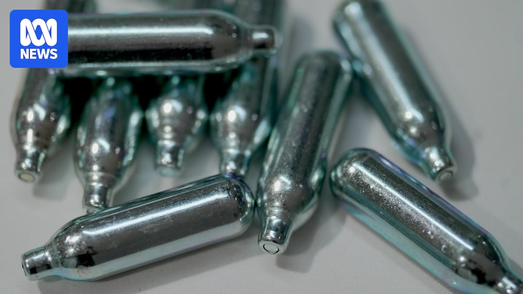
State cracks down on sale of potentially deadly 'nangs'
Eight Thai monks killed after 11yo crashes parent's truck into procession
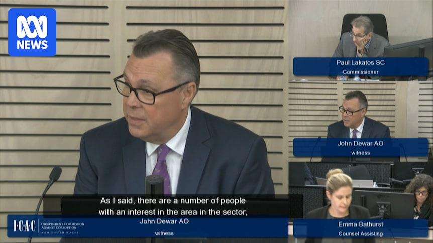
Professor admits wanting university job to benefit his consulting firm
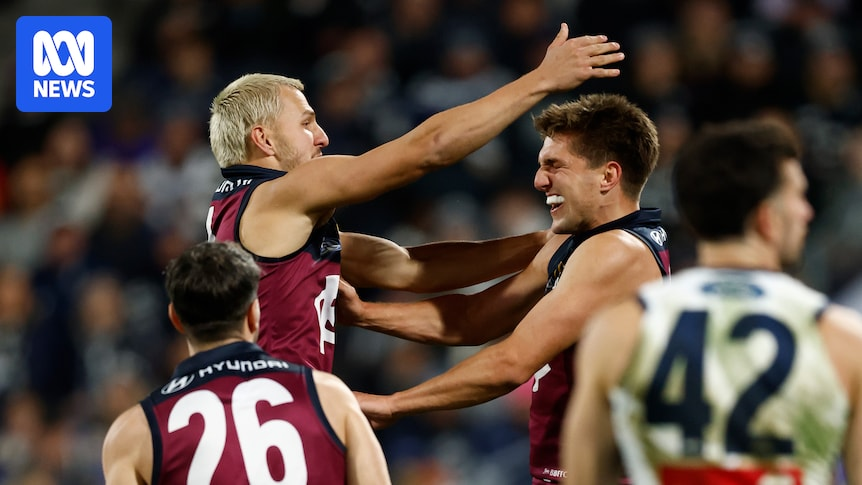
Live: Lions jump the Cats in brilliant start at Kardinia Park
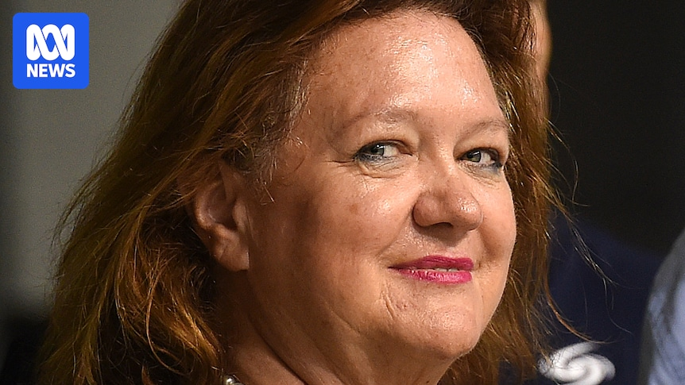
Gina Rinehart and estranged kids to pay bulk of legal costs after royalties trial
Teen accused of abducting 17yo with intent to force marriage
Privacy Commissioner ordered to hand over report on Amex security failures
Major milk company fined for misleading consumers about fresh milk
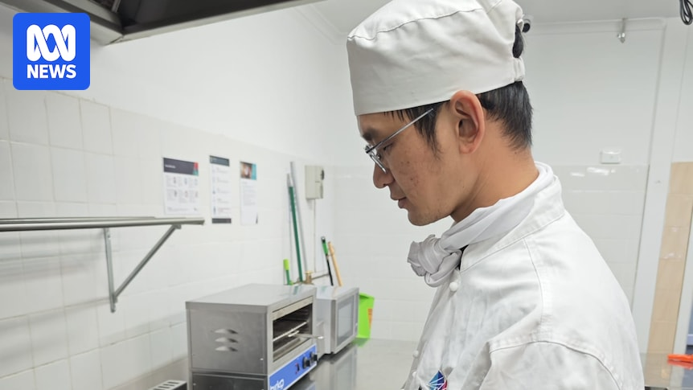
'Robbing people using visas': Applicants shocked by sudden price hike
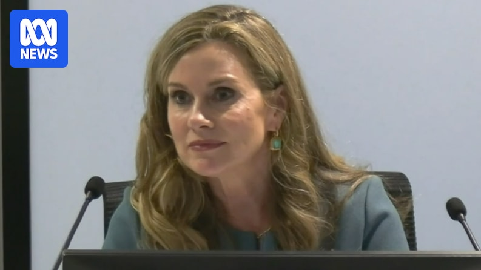
Emotional eSafety boss says Jewish community let down by 'loose guardrails'
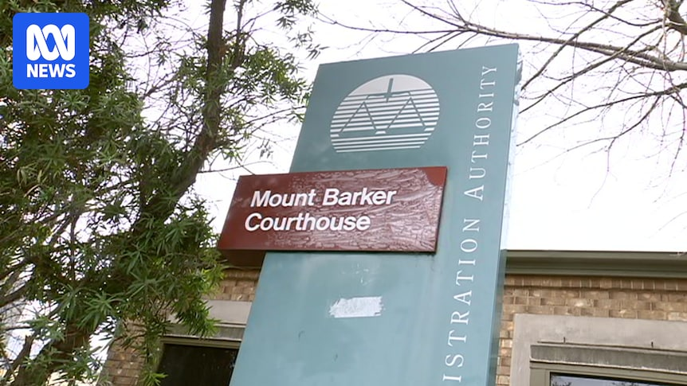
School worker sexually assaulted girls in Adelaide Hills, court told
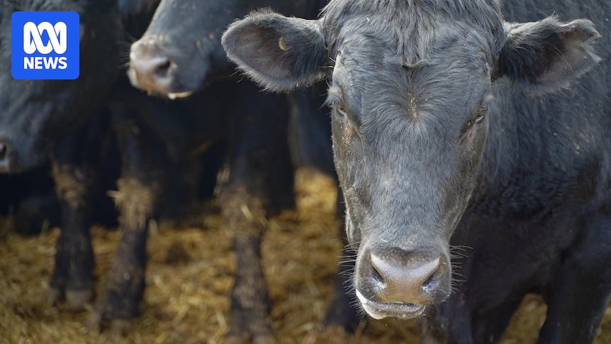
Cattle sale in Alice Springs nets $7m as market surges
Ex-Sydney childcare worker jailed for 'disturbing and depraved' child abuse
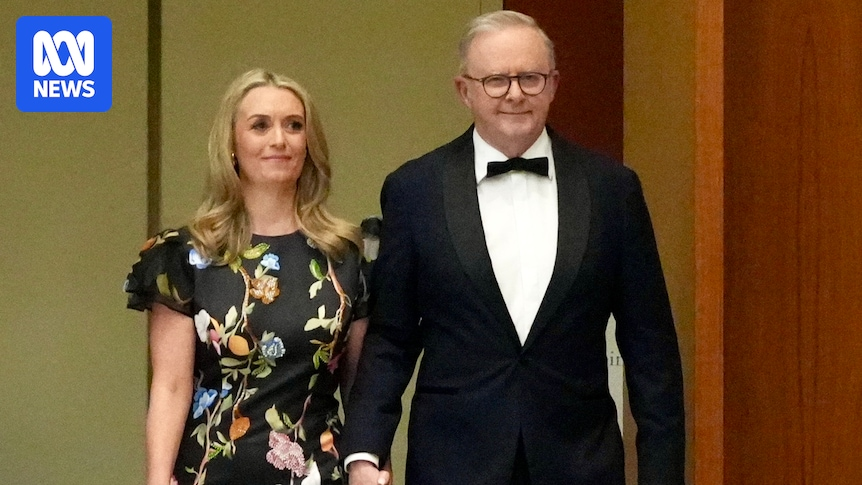
PM's tennis match shows property tax fight isn't over
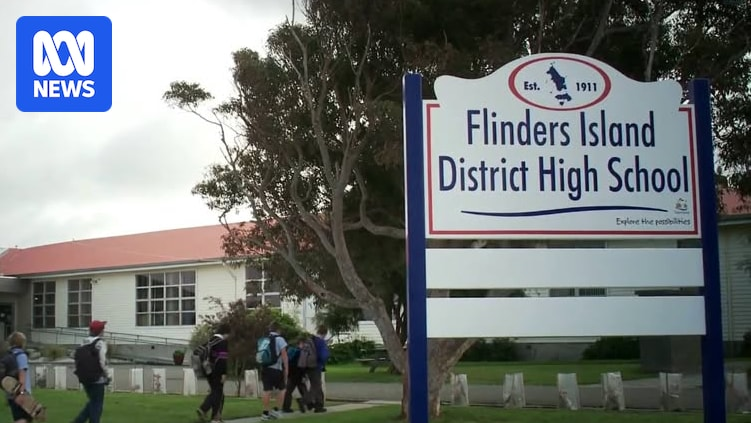
'Grave breach of trust': Former principal sent to prison
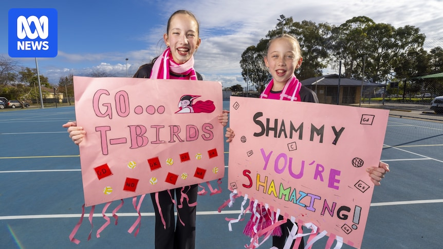
Fans hope to see Thunderbirds win netball grand final for third time
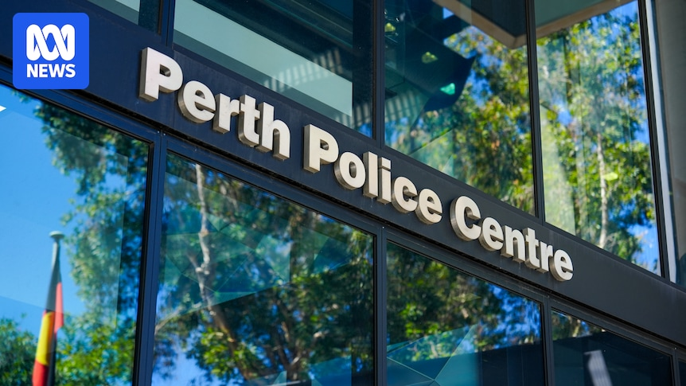
'Immense breach of human rights': WA strip searches double in three years
Pictures show interior of Trump's new Air Force One jet
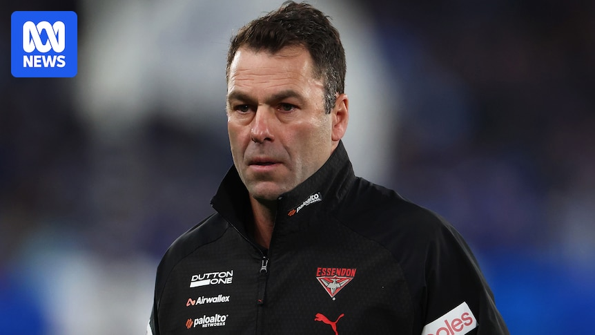
Solomon expects 'tap on shoulder' in Bombers coach race
Catholic Schools NSW chief to stand aside amid corruption probe
New KPMG chair under fire over ‘false’ whistleblower claims
ASX closes higher as banks bounce; NAB jumps 3.8%
‘Everyone always compliments my shoes’: Shoppers flock to Betts as it shuts 20 stores
Lindian fires first blast as Malawian rare earths mining kicks off
Sydney firm raised $100k ‘for a bond that did not exist’, watchdog says
Property platform punch-up: Are home buyers and sellers being misled?
PLC Resources lights up giant new WA gold hunting ground in Murchison
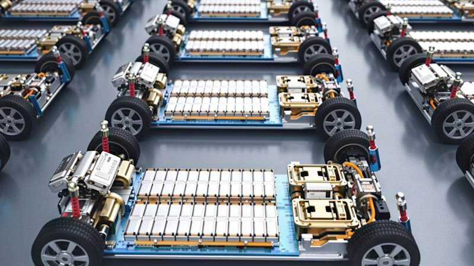
Peer plaudits power Critical Resources battery push
King River fast-tracks hunt to unlock historic WA gold camp potential
Eminem loses trademark battle with Aussie beach brand
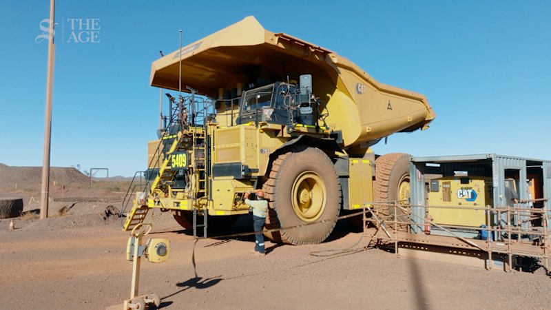
Electrification in the Pilbara
True North drills into uber high-grade Qld copper-gold shoot
Trump blows up the ‘best and most important deal ever made’
How Virgin’s new free flight-change option stacks up against other fares
TMK Energy boosts Mongolian gas flows as new drill program looms
I put my arm around a colleague’s shoulder. Was I being inappropriate?
Biscoff maker now a $15.5 billion giant as viral biscuit takes over the world
Under-fire private equity giant paid Australian staff more than $2m on average
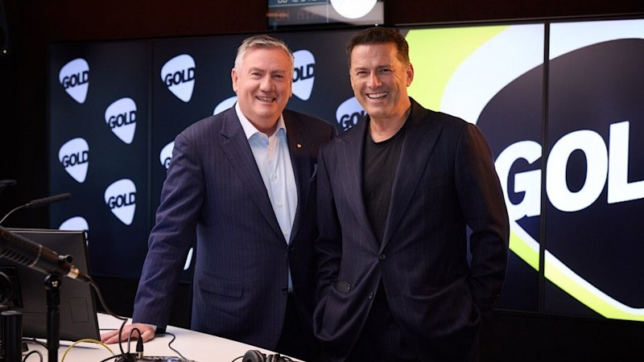
Stefanovic takes aim at TV’s ‘beige’ hosts after Nine departure
KPMG whistleblower scandal claims scalp of Westpac board member
Albanese trashes Taylor’s Midwinter Ball speech – as it happened
Rapid demand for AI datacentres in Australia could stoke inflation, experts warn – and crowd out land for housing
Australia’s mortgage burden is now above 1989 levels – when interest rates were 17%
Politicians and media gather for Canberra’s Midwinter Ball– as it happened
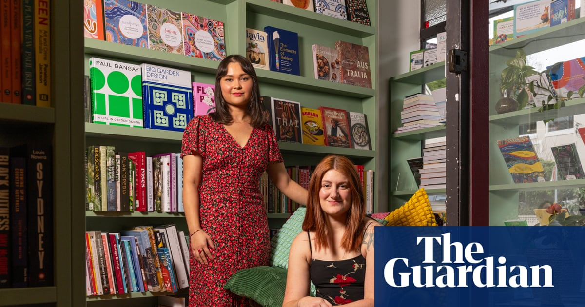
Bookshops offer much more than just retail – but who would open one in this economy?
Garth Hamilton storms out of question time after outburst – as it happened
EY sacks graduate employee after he allegedly accessed Australian PM’s bank account
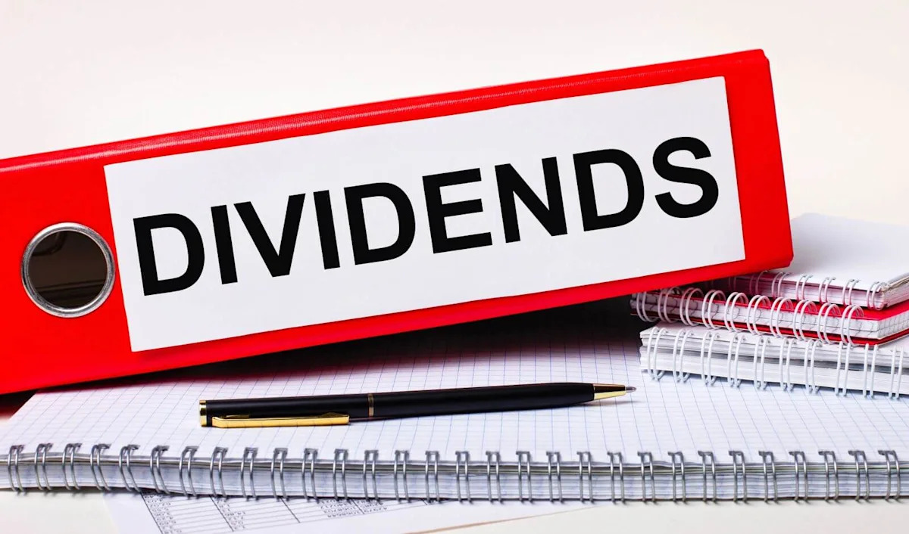
This Blue-Chip Dividend Stock Just Boosted Its Payout by 200% to $0.60 Per Share
Microsoft to cut under 2.5% of workforce in latest layoffs, Business Insider reports
India’s Russian Oil Boom Outlives the Hormuz Shock

S&P 500, Nasdaq Rode AI Boom to First-Half Records
4,000 U.S. local banks warn key bill could drain $1.3 trillion
Meta pops semis bubble
Why is China suddenly so angry?
Ryan Stokes will be OK
Australians keep cutting back, inflation still won’t die
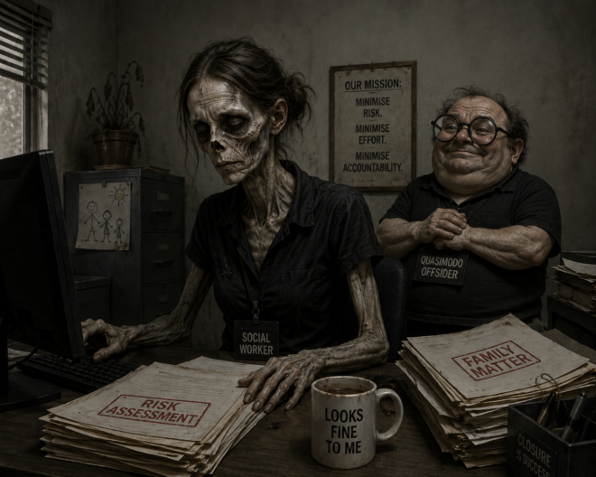
Rise and rise of the weaponised social worker
Albanese blames algorithms for Australia’s ills

The bubble is back
Aussie PMI describes clapped out economic mess
The $4.6 million couple who could qualify for welfare
Schizoid Australia freaks over tiny house prices falls
Greens: “Disinformation machine” powering the rise of One Nation
Australia’s endless gas liars
It’s not over till its over, Hormuz flows remain weak
Budget helps home buyers but hurts young investors
1% Australia’s top GDP speed!